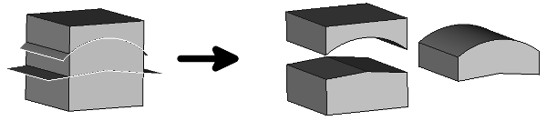

Part CompoundFilter
|
| Menu location
|
| Part → Compound Filter
|
| Workbenches
|
| Part
|
| Default shortcut
|
| None
|
| See also
|
|
|
|

Description
The CompoundFilter can be used to extract the individual pieces of the result of e.g. a Part Slice operation, with which you have split an object.
It can extract children by their indexes, test children for collisions with stencil shape, and filter children based on their properties, such as length, area, volume.
If there is only one child in the result, the output is the child. If there is more than one child to output, the output is a new compound.
How to use
- Select the sliced object
- Apply Menu → Part → Compound → CompoundFilter
- Select the CompoundFilterObject in the tree
- In the properties tab set "Filter Type" to "specific items"
- Set items to the elements you want to extract
- For a single piece this is a number starting with 0, i.e. if you want to extract the first element enter 0 in this field, 1 for the next element ...
- If you want to extract more than one piece at a time separate the numbers with ";", e.g. a value of "0;2" will extract the first and the third element
- The general case - which covers the posibilities mentioned above as well - is a list of index ranges, specified in Python notation, but without brackets. Ranges can be chained with semicolon. For example:
- 7:10 take children of indexes 7, 8 and 9 (indexes are zero-based; range-to index is excluded).
- 1;2 take children 1 and 2 (first range is child 1, second range is child 2, ranges joined by semicolon)
- 0;-1 take first children (index 0) and last one (index -1 means last child, -2 - one but last, and so on)
- 1: take all but first child (missing index means "all the way to the end").
- ::-1 take all children in reversed order
- ::2 take all odd-indexed children, i.e. indexes, 1,3,5,..., which are the elments 2,4,6, ...
- :;: repeat the input compound twice
- If you want to extract another piece select the sliced object again. It is now placed under the CompoundFilter in the tree
- Repeat the selection procedure from above. The slice and its subelements will be displayed under both CompoundFilters; they are, of course not repeated in the model. A very fast way to extract another piece is to copy the CompoundFilter. But watch out: You are asked if you want to copy the elements under the CompoundFilter too, which you must answer with no, you dont want to copy them, you only reference them.
Properties
- DATABase: Object to be filtered.
- DATAFilter Type selectable options:
- bypass; no filter. The original compound is output, unchanged.
- specific items; extract the items listed in the "items" property
- collision-pass; extract pieces that touch or intersect with 'Stencil' shape.
- window-volume (default); extract all pieces which have a volume between "Window From" and "Window To" where 100% is the biggest piece - and not the unsliced object. The value of 100% is a reference value which can be overridden by "OverrideMaxVal".
- window-area; the same as window-volume where the sliced area determines the selection instead of the volume.
- window-length; the same as window-volume where the length of the edges determines the selection instead of the volume.
- window-distance; extract children whose distance to 'Stencil' shape is within value window, defined by properties "WindowFrom", "WindowTo", "OverrideMaxVal".
- DATAInvert: If set to true the list as described above is excluded instead of included.
- DATAOverride Max Val: Value window range is defined in percentages of maximum value. The maximum value is computed according to the following set of rules:
- if 'OverrideMaxVal' is nonzero - use it.
- otherwise, if 'Stencil' link is supplied - calculate the corresponding value of stencil shape (not applicable to window-distance 'FilterType')
- otherwise, take maximum value from children in compound to be filtered.
- DATAStencil: Link to a stencil shape. For collision-pass and window-distance FilterType's, stencil is the object to test collision/distance against. For other "window-***" filter types, stencil is used to provide reference value for window percentages (maximum value override). In all other modes, 'Stencil' is ignored.
- DATAWindow From: Upper threshold percentage for selecting pieces, 100% is relative to the biggest piece.
- DATAWindow To: Lower threshold percentage for selecting pieces, 100% is relative to the biggest piece.
- DATAitems: List or range of elements to be selected if Filter Type is "specific items".
Notes
{kind=link}
{kind=link}